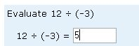
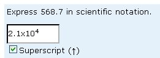
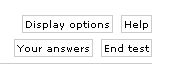
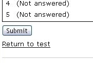
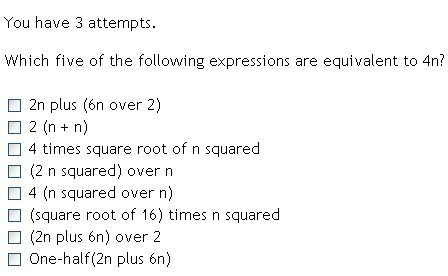

This page gives general guidance on how to enter your answers to questions. It does not provide help with the subject matter of the questions.
Note that the lables on some buttons in your test may differ from the exact text given here, for example enter answer
instead of check. The buttons still function in the same way.In many questions you will be asked to type your answer into one or more blank boxes. Simply click on the box and type.
When required, you can enter superscripts and/or subscripts by pressing the up or down arrow keys or by clicking on boxes labeled superscript or subscript.

To enter a number in scientific notation you can write the multiplication as an upper or lower case letter X or as *.
You may also wish to enter fractions. To do so you should use the / key on your keyboard. For example, if you want to enter a half then you should type 1/2. Do not use superscripts or subscripts to enter fractions.
Negative numbers and subtractions can be indicated using the '-' (hyphen, short dash or minus) key.
The left and right cursor arrow keys move left and right in the answer. If the box has more than one line, then you can type more than one line (and use the Return key to create line breaks).
Radio buttons like these require you to select a single option. Click on the button you want to select.
If you need to use the keyboard instead, press Tab or Shift-Tab until one of the radio buttons is highlighted. Then use arrow keys (↑, ↓ or ←, →) to change the selection.
Sometimes you may be asked to choose multiple options using tick boxes. To choose an option, click on the box next to that option. Click on the box again to turn it off.
To choose options without using the mouse, press Tab or Shift-Tab until the option you require is highlighted. Then tick or untick the selected option by pressing the space bar.
Some questions ask you to drag boxes to blank areas. Move your mouse over the box to be dragged, press and hold the primary mouse button (usually the left), and drag the box until it is over the appropriate blank area. Then release the mouse button.
You can also do this without using the mouse. Press Tab (or Shift-Tab) until the blank area is highlighted. Then press the space bar to cycle through the possible boxes until the correct one is in place.
Click on check when want the system to check your answer. Make sure that your answer to the question says exactly what you want it to say before clicking on check (and be careful not to click on check by mistake). You will be given feedback on your answer. Click on try again to attempt the question again. Click on next to move on to the next question.
When you have completed the last question you will be asked whether you want to submit all your answers as a completed test. (If you have done the last question out of order you may well wish to return to the test instead of doing this.) You can also use the End test button to do this before you have attempted all the questions.
In either case, you will be shown a summary of your answers and asked to confirm that you really want to end the test and submit your answers. Click on the Submit button to do this. Your answers will not be officially marked and counted towards your course result until you click on this button.
You can click on the Your answers button at any time to see a list of questions you've attempted and the answers you gave.
The question list appears either at the left or along the bottom of the question area. It shows all the questions in the test and your position within them. In the above example, you have already attempted Question 1 and you are currently on Question 2.
Some tests let you jump to another question by clicking on the numbers. If you do jump to a question then the question you are currently attempting will not be marked as given up or passed and you can attempt it later. Some tests may allow you to repeat a question, even if you have already completed it.
Info items in the question list correspond to information pages.
If you click on the Display options button you will be shown a range of options to display the questions in different text sizes, in different colours or in plain mode. It is important to note that you should use the display options of the assessment rather than use your browser settings to change colours and text sizes.
If you use a screen reader such as JAWS, then you should select the plain mode user interface. If graphics are involved in the question, then these will interpreted as words. An example of a question displayed in plain mode is given below.
